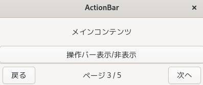
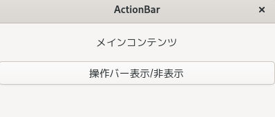

(update:2026/2/18)
Gtk::ActionBar は、ウィンドウ下部に「文脈に応じた操作（アクション）」をまとめて提示するための専用バーです。左右端と中央にウィジェットを配置することが可能で、revealer を内包しているためスライド表示にも対応しています。
Gtk::ActionBar は、アプリケーションの状態に応じて必要な操作をまとめて表示するために設計されています。
例えば
Gtk::Gtk::ActionBar は 画面下部に水平に広がる操作バー として使うことが前提になっています。
Gtk::ActionBar は内部に以下の三つの領域を持ちます。
Gtk::ActionBar の左側にウイジットを配置します。
void Gtk::ActionBar::pack_start( Gtk::Widget& child )
Gtk::ActionBar の中央にウイジットを配置します。
void Gtk::ActionBar::set_center_widget( Gtk::Widget& child )
Gtk::ActionBar の右側にウイジットを配置します。
void Gtk::ActionBar::pack_end( Gtk::Widget& child )
この構造により、「戻る ←（中央情報）→ 次へ」のようなユーザーインターフェースを簡単に作ることができます。
ActionBar は内部に Revealer を持っており、set_revealed(true/false) でアニメーション付きで表示／非表示とすることができます。
Gtk::ActionBar の表示と非表示の切り替えます。デフォルトは表示です。
void Gtk::ActionBar::set_revealed( bool revealed=true )
Gtk::ActionBar の現在の表示状態を取得します(表示：true、非表示：false)。
bool Gtk::ActionBar::get_revealed() const
#include <gtkmm.h>
// --- Model ---
struct ActionBarState {
bool revealed = true;
int page = 1;
int max_page = 5;
};
// --- Controller ---
class ActionBarController {
public:
ActionBarController( ActionBarState& state, Gtk::ActionBar& view );
virtual ~ActionBarController() = default;
void on_back();
void on_next();
void toggle_revealed();
private:
ActionBarState& m_state;
// 1.Gtk::Actionbarを参照型として宣言
Gtk::ActionBar& m_view;
Gtk::Button* back_btn = nullptr;
Gtk::Button* next_btn = nullptr;
Gtk::Label* center_label = nullptr;
void setup_view();
void update_view();
};
ActionBarController::ActionBarController( ActionBarState& state, Gtk::ActionBar& view )
: m_state( state ), m_view( view )
{
setup_view();
update_view();
}
void ActionBarController::on_back()
{
if ( m_state.page > 1 ) {
m_state.page--;
update_view();
}
}
void ActionBarController::on_next()
{
if ( m_state.page < m_state.max_page ) {
m_state.page++;
update_view();
}
}
void ActionBarController::toggle_revealed()
{
m_state.revealed = !m_state.revealed;
update_view();
}
void ActionBarController::setup_view()
{
back_btn = Gtk::make_managed<Gtk::Button>( "戻る" );
next_btn = Gtk::make_managed<Gtk::Button>( "次へ" );
center_label = Gtk::make_managed<Gtk::Label>( "" );
back_btn->signal_clicked().connect([this]() { on_back(); });
next_btn->signal_clicked().connect([this]() { on_next(); });
// 3.1 Gtk::ActionBarの左側にGtk::Buttonを配置
m_view.pack_start( *back_btn );
// 3.2 Gtk::ActionBarの中央にGtk::Labelを配置
m_view.set_center_widget( *center_label );
// 3.3 Gtk::ActionBarの右側にGtk::Buttonを配置
m_view.pack_end( *next_btn );
}
void ActionBarController::update_view()
{
center_label->set_text(
"ページ " + std::to_string( m_state.page ) +
" / " + std::to_string( m_state.max_page ));
back_btn->set_sensitive( m_state.page > 1 );
next_btn->set_sensitive( m_state.page < m_state.max_page );
// 4.Gtk::ActionBarの表示／非表示の切替
m_view.set_revealed( m_state.revealed );
}
// --- Window ---
class MyWindow : public Gtk::Window
{
public:
MyWindow();
virtual ~MyWindow() = default;
private:
Gtk::Box vbox;
Gtk::ActionBar action_bar;
ActionBarState state;
std::unique_ptr<ActionBarController> controller;
};
MyWindow::MyWindow()
{
set_title( "ActionBar" );
set_default_size( 400, 150 );
vbox.set_orientation( Gtk::Orientation::VERTICAL );
set_child( vbox );
auto content = Gtk::make_managed<Gtk::Label>( "メインコンテンツ" );
content->set_margin( 20 );
vbox.append( *content );
auto toggle_btn = Gtk::make_managed<Gtk::Button>( "操作バー表示/非表示" );
toggle_btn->signal_clicked().connect([this]() {
controller->toggle_revealed();
});
vbox.append( *toggle_btn );
controller = std::make_unique<ActionBarController>( state, action_bar );
// 2.Gtk::ActionBarをGtk::Boxに配置
vbox.append( action_bar );
}
int main(int argc, char* argv[])
{
auto app = Gtk::Application::create( "actionbar.example" );
return app->make_window_and_run<MyWindow>( argc, argv );
}
| ActionBarを表示 | ActionBarを非表示 |
|  |  |